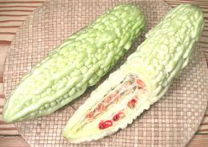
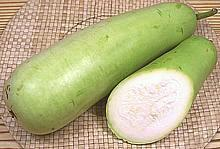
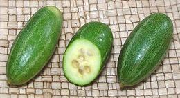

SAFARI
Users
General & History
Gourds are not so neatly categorizable as squash and cucumbers, each of which belongs to a single genus (with just a couple exceptions). Not only are there several distinct genera of gourds but the line between gourds and cucumbers is a bit fuzzy, and some gourds are called "melons" even though they aren't.
For our discussion here "Gourd" will be any vine fruit belonging to family Cucurbitaceae and native to Asia or Africa that is not a melon or cucumber - regardless of what they're called in common usage.
Many recipes for gourds say you can use Zucchini instead. This is not actually true, because their cooking characteristics are quite different. Squash quickly disintegrates into mush with long cooking, while gourds become tender, but keep their shape.
Varieties
Ash Gourd
[Winter Melon, White Pumpkin, Wax Gourd, Safed Petha (Hindi), Dong Gua (China); Mak ton (Laos); Fuk (Thai); Benincasa hispida]
This large gourd is popular in China as Winter Melon, both for its delicacy when cooked, and because with its waxy coating it can be kept well into the winter. In India it's used for sweets and curries. Immature melon is sold as Fuzzy Melon.
The photo specimen is a spherical variety about 10 inches in diameter,
relatively small so it can be sold whole. The sausage shaped varieties
can easily top a yard long and 50 pounds.
Details and Cooking.
Bitter Melon
[Balsam Pear, Bitter Gourd; Karela (India); Ampalaya (Philippine); Ku gua (China), genus Momordica]
Actually a gourd, not a mellon, this is one of the most bitter of edible vegetables, the bitterness coming from an anti-malarial substance similar to quinine. It is reputed for many beneficial medicinal properties, particularly treatment of diabetes, but all need further study.Aside from the bitterness, the flavor of this gourd is very interesting, and it is popular throughout India, Nepal, China and Southeast Asia. While long popular in Okinawa, this gourd has recently gained popularity on the main islands of Japan. People are using the vines to shade the sun side of their homes, and the gourds are available in markets during the Summer, for use in Okinawa style dishes.
Bitter Melon is now also grown in Africa, the Caribbean, and of course California. The Chinese variety is always in very good supply here in Los Angeles, and the Indian varieties are increasingly available.
The gourds are generally eaten quite green when the seed mass will be white. As the gourd ripens fully it turns yellowish, very bitter and less crisp. The pulpy arils surrounding the seeds become brilliant red and quite sweet. They are popular in salads in Southeast Asia but at this point the rest of the melon is of little use.
Chinese Bitter Melon[Ku gua (China); Momordica charantia]
Chinese bitter melons are less bitter than the Indian variety, and seem
to be a little less bitter in the larger sizes, such as those in the photo.
The top photo specimen was 11-3/4 inches long, 2-1/4 inches diameter and
weighed 12-5/8 ounces. As they ripen the pulpy seed surround, which is
not bitter, becomes brilliant red and quite sweet, but by time it's at
its best the melon is turning yellow and becoming mushy.
Details and Cooking
Indian Bitter Melon[Karela (India); Momordica charantia]
Indian bitter melons (bottom three in the photo) have a much rougher skin,
are more bitter than the Chinese variety, and also come in a white
version. They are also more prone to damage and don't keep as well as the
Chinese. Miniature Indian bitter melons are popular in India and Southeast
Asia for stuffing as individual portions.
Details and Cooking
Kantola[Spiny Gourd, Teasle gourd; Kankada, Bhat-kerela, Kakrul, Ghi korola, Boda kakara, Aa-kakara-kaya, Kankoda, Thumba, Kartole, Haagala kaayi, Erumapaval (India); Momordica dioica]
This gourd is used as a vegetable all over India and in some parts
of Southeast Asia, thus the many names. Usage is similar to Karala
(Indian Bitter Melon), but, though Its flavor is similar to karala,
it has only a faint hint of the bitterness. It is commonly fried with
spices and often served with meats or fish. This gourd also has
medicinal uses.
Details and Cooking.
Bitter Melon Leaf[Dahon ng Ampalayá (Philippines) Momorica charantia]
This green is popular all over Southeast Asia, including the
Philippines. It is mildly bitter, similar to the fruit but very much
less so. The photo specimens, purchased from an Asian grower at a Los
Angeles farmer's market, were from a bundle about 32 inches long. In
the lower right quarter you can see a very immature bitter melon
fruit. Flowers, if any, are small and yellow.
Details and Cooking
Taiwan Bitter Melon [Momordica. charantia]
This melon is similar to the regular Chinese bitter melons but much
larger, paler in color and a lot less bitter. In fact, it's hardly
bitter at all, so what's the point? These bitter gourds are good
sliced, salted and eaten raw, but they seem a bit bland cooked.
Clearly this is considered a prestige vegetable because the melons
were individually shrink wrapped and carefully packed. I'm not sure
they're actually grown in Taiwan, the Asian markets around here
seem to label a lot of unusual stuff "Taiwan". The top photo
specimen was 11 inches long, 3-1/4 inches diameter and weighed 1
pound 6-1/2 ounces.
Details and Cooking
Concombre Sauvage[Nyanya-nua, Sopropo, Kakle, Awoduan, Aoasongo, Gaayama, Nania, N-gessannia, Boobo, Bobonowron, Vovolé, Vovoné Vono, Hepa, Isúgu, Alu-osi, Akb'an'udene, Ejinrin, Tsekiri, A-bos-a-wir (Africa); Momordica foetida]
Native to tropical Africa, fruits of this plant are about 2-3/4 inches
long and covered with soft spines, which become prickly and sharp
when the fruit dries. The leaves are a bit bitter, but cooked as a
vegetable in Gabon and Malawi. The fruit is cooked and eaten throughout
its range, and the tuberous roots are cooked and eaten in Sudan. All
parts of the plant are used medicinally.
Photo by Pharaoh han distributed under license Creative
Commons
Attribution-ShareAlike v3.0 Unported.
Gac[Baby Jackfruit, Spiny Bitter Gourd, Sweet Gourd, Cochinchin Gourd (English); Gac, Qua Gac (Viet); Fuk Kao (Thai); Momordica cochinchinensis] Despite the common English name and it's outward and inward appearance, Gac is completely unrelated to the actual Jackfruit.. It grows on vines like any other gourd or cucumber and has red arils surrounding the seeds just like a ripe Bitter Gourd should, but they are very large. This gourd is eaten in Vietnam, combined with glutinous rice in a dish called xôi gac. Gac is highly seasonal, available from December into February. The photo specimen was 5-1/4 inches diameter and weighed 2-1/2 pounds. Gac has a higher concentration of bioavailable beta-carotene
(Vitamin A) than any other fruit or vegetable, 10 times that of
carrots, and 70 times the lycopene provided by tomatoes. It is also
very high in a number of important phytonutrients and Vitamin E, and
the pulp contains a fair amount of oils which efficiently transport
these nutrients. It is now being sold in the West in capsule form as
a nutritional supplement.
Details and Cooking.
Monk Fruit[Luo han guo (China); La han qua (Viet); longevity fruit (not unique); Fructus Momordicae (Pharm); Siraitia grosvenorii] Native to southern China and northern Thailand, this gourd is related to the Bitter Gourds, but genus Siraitia, not Momordica). This fruit has recently become much better known in the West. Extracts from this fruit are 300 times sweeter than cane sugar, with almost no calories. The US FDA (Food and Drug Administration) has recently rated the fruit and extracts from it as GRAS (Generally Regarded As Safe), so they can be included as natural sweeteners in any number of products. This sweetener has not yet been shown to have the serious negative effects of artificial sweeteners, but sufficient studies looking for those have yet to be conducted.. This sweetener has not yet been shown to have the serious negative
effects of artificial sweeteners, but sufficient studies looking for
those have yet to be conducted. The fruits grow on vines and are
between 2 to 2-3/4 inches diameter with sweet, fleshy edible pulp
and many seeds. Details and Cooking.
|
Bottle Gourd / Opo
 [Opo Squash, Calabash (U.S.); Upo (Filipino); Dudhi, Lauki, Sorakaya (India); Yugao, Kampyo (Japan); Po gua (Canton); Kwa kawa, Hu gua (China); Cucuzzi, Cucuzza (Italy); Bau (Viet); Bu (Burma), Bu nyunt (young shoots (Burma); Mak nam (Laos); Lagenaria siceraria]
This gourd comes in many shapes and sizes from long and snake like to spherical but the form pictured is the one common in Southern California markets. They will grow much larger but they get very bitter when more mature. Eventually the shell hardens and the gourd becomes hollow and may be used as a container or carved decoratively.
Young shoots and leaves are also edible. Dried strips of the gourd
called Kampyo are important in Japan and often used as edible bindings
to hold other ingredients together.
Details and Cooking.
Bottle Gourd / Opo - Spherical
 [Indian Opo (U.S.); Dudhi, Lauki, Sorakaya (India); Bu
(Burma); Lagenaria siceraria]
[Indian Opo (U.S.); Dudhi, Lauki, Sorakaya (India); Bu
(Burma); Lagenaria siceraria]
This variety of Bottle Gourd started to appear in Los Angeles in 2012.
In Indian markets it may be sold as "Indian Opo", but in other markets
it is just plain "Opo". The seeds are a little larger than in the
long Opos, but cooking characteristics are the same.
Details and Cooking.
Calabash
- See Bottle Gourd. There is also a Calabash that isn't a gourd at all but the large spherical fruit of a tree in the Bignonia family (B. Crescentia (6 species)) native to Central and South America. Both types of calabash are dried and used as containers.Fluted Pumpkin
[Fluted Squash; Telfairia occidentalis]
This gourd is native to southeast Nigeria and is cultivated mainly by
the Igbo people. The fruit is inedible, but the seeds are very important
for protein and oil, and the leaves are used as a very nutritious
vegetable. The plant and seeds are also used in traditional medicine.
Drawing by Joseph Dalton Hooker, copyright expired.
Details and Cooking.
Fuzzy Melon
[Hairy Melon; Heari Meron (Japan (got that?)); Mo Qua, Mo Gwa, Moa Gua, Tseet Gwa, Doongua, Cham Kwa (China); Timum Balu (Malay); Faeng, Fock (Thai); Winter Melon (Thai in English); Bi (Viet); Tougan (Japanese); tankoy, kundol (Filipino); petha, kaddu (Indian);Benincasa hispida var chiehgua]
A variety of the large to gigantic Ash Gourd
that's picked and eaten at a much earlier stage of growth. In this stage
it's covered with short bristles, thus the name, but by time I get them home
most have rubbed off. Asian recipes often presume they're about 1/2 pound,
but here in Los Angeles they run from 3/4 pound to a shade over 2 pounds.
The photo specimen was 13 inches long and weighed 2-1/4 pounds, well above
average size.
Details and Cooking.
Gherkin
Three fruits are called "gherkin", generally when pickled, and one of them is a gourd.
- The Tindora (Ivy Gourd) is sometimes called Gherkin whether pickled or not.
- The True Gherkin - a small spiny cucumber.
- Small Cucumber Gherkin
Ivy Gourd
- see Tindora.Luffa Gourd
[Loofa, Sponge Gourd, genus Loofa] Most well known in the U.S. as a bath sponge, these gourds are grown in a number of varieties both for sponges and for eating. They are immensely popular in India and also much used in Southeast Asia and China.
Angled Luffa[Chinese Okra, Silk Gourd, Vine Okra, California Okra; Patola (Philippine); Muop Khia (Viet) Buap liyam (Thai); Turai, Torai, Dodka (India); Sing Qua (China); Oyong (Indonesia); Luffa acutangula] Grown all over Southeast Asia, these have also long been a common vegetable here in Southern California. They are used by Asians of all stripes, from India to the Philippines. Though commonly sold as "Chinese Okra", it is entirely unrelated to Okra and does not resemble it in flavor, texture, cooking properties or size, only in that it has ridges. The skin is stiff and thin with sharp ridges running the full
length. The flesh is very delicate in both flavor and texture, yet
holds its shape well when cooked. The photo specimen was 19 inches
long, 2-1/2 inches diameter and weighed 14 ounces. They vary in shape
and size. The cut one was more uniform in diameter, 21 inches long
and weighed just over 1 pound.
Details and Cooking.
Smooth Luffa[Egyptian Luffa, Silk Gourd, Vietnamese Lufa; Patola (Philippine); Muop Huong, Totura Muop (Vietnam); Galka, Turai, Ghosavala (India); Sing Qua (China); Oyong (Indonesia); Luffa cylindrica alt L. aegyptiaca] Probably of South or Southeast Asian origin, these are an eating variety which may be cylindrical or snake shaped with little or no ridging. Cylindrical ones are generally eaten when they are about 8 to 10 inches long, snake shaped ones depending on variety. The photo specimen in the center was 11 inches long and 2-1/2 inches diameter. These gourds have not yet become common in Southern California
markets, but I have found them in Indian markets in Artesia and in
large Asian markets in Los Angeles. They have a more distinctly
vegetable flavor than the Angled Luffa and store considerably
longer. In California they are grown commercially mostly for the bath
sponge produced when they mature and dry out. They are also grown in
Florida where some may be used for cooking.
Details and Cooking
Smooth Luffa[Egyptian Luffa, Luffa cylindrica alt L. aegyptiaca] This is the same Luffa as the previous entry but allowed to mature completely and dry. They are harvested for the sponge-like interior fiber (the papery shell is easily removed). The "sponges" are popular as bath sponges and for various household chores. Luffas should be dried well between uses for longer life. A large
one also serves marvelously as a non-injurious club for swatting
snoring bed companions in the night. The sponge pictured is about 26
inches long. My local market sometimes has them for about $1.39 each
but you can pay a lot more for a short piece at an upscale bath
boutique.
Sponge Cucumber[Sponge Gourd, Round Luffa, Wild Luffa; Luffa operculata] This Luffa is only about 5 inches long pointed at both ends with spiky skin. It is used as a small sponge and made into massage brushes and sponge gloves, but is more noted for medicinal uses. It has many uses in South American folk medicine and is widely sold in the U.S. in pill and potion form as an ingredient in sinus treatments. It also appears in homeopathic remedies. When immature this luffa can be cooked just the same as the larger
ones shown above. Photo by H./Zell distributed
under license Creative Commons
Attribution-ShareAlike v3.0 Unported.
|
Opo Squash / Upo
- See Bottle Gourd
Oystersnut
[Queen's nut, Zanzibar oilvine; Telfairia pedata]
This gourd is native to Tanzania and northern Mozambique, but is now
widely cultivated in East and South Africa. It is a climbing vine, and
bears fruits up to 33 pounds. Flesh of the fruit is edible, but its main
value is the seeds, which provide both protein and a slightly sweet
cooking oil (Oyster-nut oil, Koémé de Zanzibar). The seeds
can be eaten raw, or boiled, roasted or pickled. The cake left from
pressing for oil is rich in fats and protein, and is used for animal feed.
Drawing by Samuel Curtis, Joseph Dalton Hooker, copyright
expired.
Parval Gourd
 [Parwal gourd, Pointed Gourd, Potal; C.Trichosanthes dioica]
This tiny relative of the Snake Gourd is an important vegetable in Bengal and Uttar Pradesh (north eastern India). They have just started becoming available in the Indian markets here in Southern California (spring 2013) but are still expensive at about 2013 US $5.99 per pound. They were formerly only available canned, but availability fresh is still very erratic.
These gourds can grow to 6 inches long but are harvested immature at
between 2 and 3 inches. The photo specimens were typically 2-1/2 inches
long and 1.2 inches diameter. The seeds are larger and more mature than
in other edible gourds and are a bit crunchy, but since these gourds are
often stuffed or sliced, the seeds are usually removed. The skin is very
thin but a little hard, so they are most often scraped. Cooked taste was
pleasant, but not really distinctive. I'd not seek these out at the
price - but then, I'm not from there.
Snake Gourd
[Serpent Gourd, Chichinga, Padwal, Trichosanthes cucumerina var anguina]
This gourd is popular in Southern India and Southeast Asia. It comes in various colors, sizes and shapes, growing to as long as 6 feet, and in Asia is often seen with a rock tied to the tip to keep it growing straight. Shoots and leaves are also eaten as a vegetable.
The flesh of this gourd is similar to the
Luffa and Bottle Gourd,
and like them will hold its shape when cooked. Unlike the other two, the
seed mass of the Snake Gourd is loose and fluffy and is usually removed.
Snake gourd is also used in traditional Chinese medicine.
Details and Cooking.
Photo by Abhilash placed in Public Domain.
Pork Fat Nut
[Lard Seed; Akar kepayang (Malay); Hodgsonia macrocarpa | H. heteroclita]
These gourds, of the same tribe as the Parval and Snake Gourds
above, but quite different in makeup, are native to the eastern
Himalayas, Yunan, China and Assam in the far northeast of India. These
vines produce fibrous fleshed fruit weighing about 4 pounds. The
more commonly used H. macrocarpa is lighter in color and lacks
the pumpkin-like sutures of H. heteroclita in the watercolor.
Each fruit has up to 8 large seeds which have a 50% fat content. They
are suspected of being slightly toxic raw, but are generally roasted
or otherwise cooked before use. Roasted, they taste like fatty pieces
of pork. In Assam these nuts are used in curries. The flesh is not
considered edible. Cooking oil can be pressed from the seeds, which is
also used medicinally, as are other parts of the plant.
Watercolor by John Fergusson 1855 copyright expired.
Tinda
[Indian round gourd, apple gourd, Indian baby pumpkin, Praecitrullus fistulosus alt Citrullus vulgaris]
Native to India, this gourd is popular in the cuisines of Northern India
and Pakistan. It's becoming more common in Southern California and is
seasonally available in markets that have a significant Indian / Pakistani
element in their clientele. The gourd is eaten in an immature stage when
it will be about 3 inches in diameter and tender with skin that does not
need to be peeled. Seeds of more mature gourds are also eaten.
Details and Cooking.
Tindora
[Ivy Gourd, Indian Gherkin; Scarlet Gourd; Pepino Cimarron (Spanish); Hong gua (China); Kovakka (Malay); Tendli, Tondli, Tindola, Ghiloda, Goli, Kundri, Kundru, Kunduzi, Kowai, Kovai, Donda, Dondakaya (India); Coccinia grandis]
A popular vegetable in India, this tiny gourd can now be found in Indian markets in California and elsewhere. Here it is always sold green, looking very much like a tiny cucumber, but in India it is also sometimes used in it's scarlet red mature stage.
Tindora can be eaten raw and are a lot more crunchy than cucumbers, or they
may be cooked as a side dish or may be pickled. When pickled they are
sometimes called "gherkin" but are easy to tell from the real
Gherkin and from cucumber gherkins by
their smooth skin. Typically they are between 2-1/2 and 3-1/4 inches long,
3/4 to 7/8 inch diameter and weigh around 5/8 ounce.
Details and Cooking.